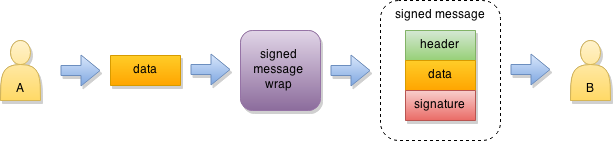

Secure message
Secure message is a lightweight service which can help to deliver some message or data to your peer in a secure manner. It provides a simple way to protect your messages and bound them to credentials of communicating peers using strong cryptography. It adds data confidentiality, integrity and authentity to your message in one shot (single function call). Some features are: strong data encryption message integrity and authentication key generation (both RSA and ECC) stateless, easy-to-use API
Secure message only assumes that peers have each other's public key which they trust. Then they can freely exchange any messages with high security level and little overhead.

Secure message comes in two flavors: signed message (integrity and authentity) and encrypted message (confidentiality, integrity and authentity).
Signed message
Signed message is useful for cases where you do not need data confidentiality. It allows the receiver to verify the origin and integrity of the data while still allowing intermediate nodes to process it accordingly (for example, route data based on its type).

Encrypted message
Encrypted message is useful when you need full stack of protection for your data and in most cases you will use this flavor. Currently, internally, encrypted message uses Secure Cell in seal mode for data protection.